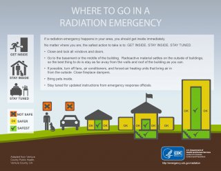

Frequent Questions: Radiological Events
View frequently asked questions and answers related to radiological events by topic.
On this page:
- Radiological Emergency Response at the EPA
- Emergency Preparedness
- Protective Action Guides (PAGs)
- Fukushima
Radiological Emergency Response at the EPA
What is the EPA's role during a radiological emergency?
From "dirty bombs" to foreign radiological releases, EPA has the ability and authority to respond to many different types of radiological incidents.
EPA's Radiological Emergency Response Team (RERT) works with federal, state and local agencies to monitor radioactivity and clean up affected areas. During an emergency, EPA Protective Action Guides to help determine what actions are necessary to protect people from unhealthy levels of radiation.
The EPA leads the U.S. domestic response to foreign radiological events that have the potential to affect the U.S. or its territories. For example, the EPA responded to the nuclear accidents in Chernobyl, Ukraine and Fukushima, Japan by monitoring the radioactivity levels from fallout in the U.S.
For more information about EPA’s specialized radiological emergency response expertise and equipment, visit Radiological Emergency Response.
For more information about how the EPA responds to radiological incidents, visit National Response Framework (NRF).
For more information about the responsibilities of Federal Agencies during response activities, visit Nuclear/Radiological Incident Annex at FEMA.gov.
What kinds of experts and equipment does the EPA’s radiation protection program have to support a radiological emergency response effort?
The EPA is a member of several interdisciplinary radiological emergency response teams. Any one of these teams can be called upon to support a radiological emergency. Some of these teams are listed below.
- Federal Radiological Monitoring and Assessment Center (FRMAC): During a major radiological emergency, the FRMAC is the control point for federal assets involved in monitoring the potential impacts of the incident, including specialized equipment, emergency response personnel, and scientific experts. By providing environmental radiological data to emergency responders, the FRMAC assists state, local and tribal governments in their mission to protect the health and well-being of their citizens. The EPA may support the FRMAC by providing field teams to collect environmental monitoring data, supplying data from the EPA’s RadNet monitoring data and providing radiation experts to the Federal response. The Department of Energy (DOE) is responsible for establishing the FRMAC. As the response starts to focus on long-term environmental cleanup, the EPA takes over FRMAC leadership.
- The Advisory Team for Environment, Food and Health (Advisory Team): The Advisory Team is comprised of radiation experts from the Food and Drug Administration, the Centers for Disease Control and Prevention, the Environmental Protection Agency and the U.S. Department of Agriculture. During a radiological emergency, the Advisory Team can provide radiation guidance to state, local and tribal response organizations. This can include guidance on evacuation, relocation, worker safety, food and water safety, medical intervention, human health impact, animal health impacts, crop management, environmental assessment through monitoring and sampling, and waste management. Beyond providing technical guidance, the Advisory Team works with the data collected by the FRMAC to interpret the EPA’s Protective Action Guide (PAG) Manual for a specific incident.
- The Radiological Emergency Response Team (RERT): The RERT is a team of multidisciplinary, specially-trained staff from across the EPA. The team provides critical scientific and technical expertise to complement other government services during radiological emergencies. The RERT responds to emergencies that can range from incidents at nuclear power plants, to transportation incidents involving shipments of radioactive materials, to deliberate acts of nuclear terrorism. During an emergency, the RERT provides monitoring and data analysis services such as specialized scanning and monitoring equipment. The EPA has the capability to deploy mobile incident command post and mobile radiation monitoring lab to manage and monitor the situation wherever it may occur. The team can be reached at any time through the National Response Center.
- RadNet: The EPA’s nationwide RadNet system monitors the nation's air, precipitation and drinking water to track radiation in the environment. Over time, RadNet sample testing and monitoring results show the fluctuations in normal background levels of environmental radiation. RadNet has 140 air monitors in 50 states and runs 24 hours a day, 7 days a week collecting near-real-time measurements of gamma radiation. For more information about near-real-time air monitoring, visit Learn About RadNet.
Emergency Preparedness
Should I take Potassium Iodide (KI) during a radiological emergency?
Never take potassium iodide (KI) or give it to others unless you have been specifically advised to do so by the health department, emergency management officials or your doctor.
KI is issued only in situations where radioactive iodine has been released into the environment, and it protects only the thyroid gland. KI works by filling a person’s thyroid gland with stable iodine so that harmful radioactive iodine from the release is not absorbed, reducing the risk of thyroid cancer in the future.
You should take KI only if you have been specifically advised to do so by local public health officials, emergency management officials or your doctor. It is not an “anti-radiation” drug.
For more information about potassium iodide, visit Frequently Asked Questions about Potassium Iodide at NRC.gov.
What can I do to prepare for a radiological emergency?
As with any emergency, it is important to have a plan in place so that you and your family will know how to respond in the event of an actual emergency. Take the following steps now to prepare yourself and your family:
- Protect Yourself: Should a radiological emergency occur, go inside, stay inside and stay tuned. Repeat this message to your family during non-emergency times so they will know what to do should a radiological emergency occur.
- Make a Family Emergency Communication Plan: Share your family communication plan and practice it so that your family will know how to respond should a radiological emergency occur. For more information on creating a plan, including templates, visit Make A Plan at FEMA.gov.
- Put Together an Emergency Supply Kit: This kit could be used in any emergency and may include nonperishable food items, a battery-powered or hand crank radio, water, flashlight, batteries, first aid supplies and copies of your critical information if you need to evacuate. For more information on what supplies to include, visit Basic Disaster Supplies Kit at FEMA.gov
- Know Your Community’s Emergency Plan: Check with your local officials, your child’s school, your place of employment and others to see how they are prepared to respond to a radiological emergency.
- Enable Public Alert and Notification Systems on Your Mobile Devices: Many communities have text or email alert systems for emergency notifications. These systems will be used to alert the public if a radiological incident occurs. Go to your device’s settings to enable it to ring and display these messages when it is silenced or on “Do Not Disturb.” To find out what alerts are available in your area, search the Internet for your town, city, or county name and the word “alerts.”
- Find Trustworthy Sources of Information: Find trustworthy sources of information now. You can return to those sources in the event of an emergency for messages and instructions. Unfortunately, we know from past disasters and emergencies that small numbers of individuals may take the opportunity to distribute false information.
For more information about protecting yourself and your family in the event of a radiological emergency, visit Radiation Emergencies at Ready.gov.
For more information on how to prepare, plan, and stay informed, visit Ready.
What should I do in case of a radiological emergency?

Get inside, stay inside and stay tuned to radio, TV, or other technology. Follow instructions from local responders.
Keep in mind that evacuation may not always be appropriate depending on the situation. Sometimes, simply staying inside is a better choice for preventing or reducing radiation exposure during a radiological emergency. Buildings can provide significant protection from radiation. Getting inside quickly and staying inside after a radiological incident can limit your exposure to radiation and possibly save your life.
If you witness an incident or other emergency involving radioactive material, report it to the National Response Center at: 1-800-424-8802.
For more information about protecting yourself and your family in the event of a radiological emergency, visit Radiation Emergencies at Ready.gov.
Will it be safe for me to eat food or drink water from my area after a radiological emergency?
You may consume food and drinks that were inside a building. Check food in a refrigerator or freezer to make sure it hasn’t spoiled.
You may consume food and drinks in sealed containers that were outside as long as you wipe off the container with a damp towel or cloth. Place these towels or cleaning cloths in a plastic bag and tie it shut, if possible. Be sure to keep the bag away from people and pets. Do not consume food from your garden, or food or liquids that were outdoors and uncovered, until authorities tell you it is safe.
Water from the tap is probably safe. But until drinking water tests are conducted, only bottled water is certain to be free of contamination. Further, it is important to note that boiling tap water does not get rid of radioactive material, but it will protect you from germs.
Tap or well water can be used for cleaning yourself and cleaning your food unless emergency response officials tell you not to.
For more information about protecting yourself and your family after radiological emergency, visit Radiation Emergencies at Ready.gov.
Protective Action Guides (PAGs)
How is the PAG Manual being implemented in the FEMA Radiological Emergency Preparedness (REP) Program?
Offsite response organizations should contact their FEMA Region REP Program office to obtain the latest version of FEMA’s Frequently Asked Questions (FAQ) Regarding REP Program Implementation of the Updated PAG Manual. Questions regarding REP Program implementation not addressed in the FAQ may be submitted to the FEMA Technological Hazards Division’s Action Office at THD-ACTION-OFFICE@fema.dhs.gov.
For more information, visit FEMA REP Program Manual webpage.
Where can I find training on using the 2017 PAG Manual?
For current trainings please visit the Protective Action Guides (PAGs) Trainings webpage.
What are Protective Action Guides (PAGs) and why are they important?
PAGs, or Protective Action Guides, are radiation dose guidelines that would trigger public safety measures, such as evacuation or staying inside, to safeguard public health after a radiation emergency has occurred. The PAGs help responders plan for and respond to radiation emergencies.
Every emergency is different, and the best action or set of actions in one situation may not be appropriate at another time or in another situation.
Officials use the PAGs, combined with their existing local knowledge, to help them make the very important decisions about which emergency steps are warranted and when those steps should be enacted.
For more information, visit the PAGs webpage.
How do the PAGs inform safety measures during and after a radiological emergency?
PAGs are radiation dose guidelines that would trigger public safety measures, such as evacuation or staying inside, to safeguard public health after a radiation emergency has occurred. These are doses that the EPA suggests should be avoided. Emergency response organizations use the PAGs to develop their own local plans to protect the public in a radiation emergency.
The PAGs are not federal regulations or laws. The manual is guidance that state and local officials can take during an emergency, but the decision to use the guidance in the PAG Manual must be made by the local or state governments planning for, or responding to, a radiological event.
The PAG Manual covers the entire incident—from the immediate emergency, to the initial response, to the long-term recovery and remediation of an area affected by a radiological emergency. It is possible that some protective actions, such as food safety measures, could stay in place to protect public health until the area is cleaned up.
For more information, visit PAGs webpage.
When do states need to implement the 2017 PAG Manual?
The PAG Manual provides only guidance for state, local and tribal governments to use at their own discretion when planning for and responding to a radiological emergency.
FEMA’s Radiological Emergency Preparedness (REP) Program may work with offsite response organizations to determine implementation plans for the 2017 PAG Manual.
For more information, contact the FEMA Technological Hazards Division’s Action Office at THD-ACTION-OFFICE@fema.dhs.gov for specific guidance.
How does the drinking water PAG work with EPA’s existing Safe Drinking Water Act regulations?
The drinking water PAG is non-regulatory guidance for radiological emergency situations only. Following a radiological emergency, community water systems operators must take corrective measures return to compliance with the National Primary Drinking Water Regulations for Radionuclides (Radionuclides Rule) as soon as practicable.
For more information, visit the Radionuclides Rule webpage.
What is a drinking water PAG?
The drinking water Protective Action Guides (PAGs) recommends a health-based value that can be used in the event of a large-scale radiological emergency to determine when alternative drinking water should be provided and the use of contaminated water supplies be restricted. This means that, in the same way that the PAGs provide guidance to officials on when to order certain actions like evacuation, the drinking water PAGs provide guidance to officials on when to order certain drinking water-specific actions. These actions could include treating the contaminated water, blending water sources, providing bottled water or water in tanker trucks, or routing water in from a neighboring system.
The drinking water PAGs are doses of radiation that should be avoided during an emergency event. They do not represent acceptable routine radiation doses. PAGs trigger safety measures to keep radiation doses to the public as low as possible during emergency situations only. The PAGs contain two tiers of guidance—one that address sensitive populations, such as children and pregnant women, and one for the general adult population
For more information about the PAG Manual, visit the PAGs webpages.
Where can I obtain a copy of the EPA's Protective Action Guides Manual?
The EPA no longer distributes hard copies of the PAGs, but electronic versions are hosted on the EPA’s website.
To download a copy of the 2017 PAG Manual, visit the PAG Manuals and Resources webpage.
What are the critical changes between the 1992 and 2017 version of the PAG Manual?
Since 1992, the PAGs have been updated three times; the following major changes have been made and are incorporated in the 2017 PAGs:
- Clarifying planning considerations related to the lower FDA Potassium Iodide (KI) guidance
- Deleting the thyroid-based evacuation threshold
- Providing additional language on using the Federal Radiological Monitoring and Assessment Center (FRMAC) derived value tables
- Adding information from the appendices of the 1992 PAG Manual on how the PAG levels were set
- Providing explanation about the removal of the Relocation PAG of 50 mSv (5 rem) over 50 years to avoid confusion with long-term cleanup goals
- Applying the PAG Manual to incidents other than just nuclear power plant accidents
- Referring users to current food guidance from the Food and Drug Administration (FDA)
- Providing basic planning guidance on reentry, cleanup and waste disposal
- Incorporating late phase (cleanup) guidance from the Department of Homeland Security’s Radiological Dispersal Device/Improvised Nuclear Device Planning Guidance
- Adding a two-tiered drinking water guidance addressing both people at the most sensitive life stages and also the general population
For more information, visit the PAGs webpage.
Why is there a need for a drinking water PAG when the EPA already has regulations for radionuclides in drinking water?
The Safe Drinking Water Act (SDWA) gave the EPA the authority to create Maximum Contaminant Levels (MCLs) for various radionuclides in drinking water. MCLs are based on a lifetime of continuous exposure and help ensure that, in non-emergency situations, the public’s water is safe to consistently drink over the course of 70 years. While the SDWA framework is appropriate for day-to-day (normal) operations, it does not provide the necessary tools to assist emergency responders with protecting public health directly after a radiation emergency.
An emergency situation, however, is much shorter in duration; the EPA realized that maintaining the MCLs directly following an emergency may not be achievable and, therefore needed to provide guidance that would protect the public’s health during a shorter time period.
The goal of the drinking water PAG is to prioritize potentially scarce water resources for those most at risk in a disaster response. Regardless of the cause of an incident, EPA expects that any drinking water system impacted during a radiation emergency will take action to return to compliance with the Safe Drinking Water Act levels as soon as is practical.
For more information on developing emergency drinking water supplies, see the EPA’s guidance on Planning for an Emergency Drinking Water Supply.
For more information, visit the PAGs webpage.
How do officials know when it is time to carry out protective actions?
When a radiological emergency occurs, officials will use available information and computer models to quickly predict how much radiation people could potentially be exposed to. They then use the Protective Action Guides (PAGs) to determine what safety measures can be taken to avoid or minimize that potential exposure.
Additionally, the PAGs are used to plan responses to emergencies. Across the country, cities, counties, parishes, states, tribes and territories, use the PAGs to develop plans that would be carried out in case of a nuclear or radiological emergency.
For more information, visit Protective Action Guides (PAGs).
At what point and what concentrations will I be told to stop drinking tap water during a radiological emergency?
Your local, county or state officials will make decisions about continued use of tap water based upon the conditions on-site during a radiological emergency. To assist the decision makers, the EPA developed drinking water protective action guides (PAGs) that trigger protective actions to minimize or prevent radiation exposure during an emergency. The drinking water PAGs have two health-based radiation levels to be avoided for periods up to one year. Infants, children aged 15 and under, and pregnant or nursing women should avoid tap water with a projected dose above of 1 mSv (100 mrem) over one year. Anyone over the age of 15 (excluding pregnant and nursing women) should avoid tap water with a projected dose of 5 mSv (500 mrem) over one year.
Since PAGs are only guidance, the levels selected by your local, county or state officials will depend on the type and severity of the incident. Your local water officials may instruct you to continue drinking the tap water. They may use water that was not affected by the incident, such as water from storage tanks or other towns. They may also transport water in tanker trunks or provide bottled water.
Fukushima
Does EPA monitor the ocean for radiation from Fukushima?
The EPA does not monitor or sample ocean waters. However, state and international organizations have provided ocean monitoring in the wake of the Fukushima incident.
In late 2015, ocean monitoring by Woods Hole Oceanographic Institution (WHOI), a marine research organization, detected very small amounts of radioactivity from the 2011 Fukushima incident 1,600 miles west of San Francisco. Radiation levels in the seawater were very low and posed no health risk. The WHOI is no longer monitoring ocean water for radioactivity after the Fukushima incident. To read the 2015 press release, visit Higher Levels of Fukushima Cesium Detected Offshore.
Beginning in 2012, the National Oceanic and Atmospheric Administration (NOAA) and its partners and volunteers conducted monthly studies to observe and understand the types and amounts of tsunami debris reaching U.S. shorelines. For more information, visit NOAA’s Monitoring Tsunami Debris on North American Shorelines.
Operating outside of the U.S., the Integrated Fukushima Ocean Radionuclide Monitoring (InFORM) network compiles data to assess radiological risks to Canada’s oceans associated with the Fukushima nuclear disaster. InFORM includes members from Canadian governmental and academic sectors, along with the Woods Hole Oceanographic Institute in the United States, whom assess environmental and human health risk from Fukushima radiation on the west coast of Canada and North America. Monitoring data compiled is part of the InFORM network and reported for the Pacific Ocean. For more information about the InFORM network and to view the data, visit Fukushima InFORM.
Where can I find the most current information about Fukushima and radiation levels in the environment?
The EPA’s air monitoring data have not shown any radioactive elements associated with the damaged Japanese reactors since late 2011. Even during the incident, the levels found in the air were very low—always well below any level of public health concern. The following links provide the most current information from trusted scientific organizations that continue to monitor the situation:
- Situational Updates – For situational, status updates and monthly reports issued by the International Atomic Energy Agency (IAEA) regarding the Fukushima Daiichi Nuclear Power Station, visit Fukushima Dai-ichi Status Updates at IAEA.org.
- Current Radiation Air Monitoring in the U.S. – Current, near-real-time, and historic air monitoring data is compiled for 140 stationary monitors located across all 50 U.S. states by the EPA's RadNet system. This monitoring network evaluates the nation's air, precipitation and drinking water to track radiation in the environment, 24 hours a day, 7 days a week. For more information about current radiation levels in your area, visit RadNet.
- Food Safety – The Food and Drug Administration (FDA) is responsible for protecting public health by assuring the safety of our nation’s food supply. In a March 2014 statement, the FDA indicated that there was no evidence that radionuclides from the Fukushima incident were present in the U.S. food supply at levels that would pose a public health concern. To view the FDA reports, or to stay informed about FDA food safety alerts, visit FDA’s Response to the Fukushima Dai-ichi Nuclear Power Facility Incident.
- Ocean Monitoring - In late 2015, ocean monitoring by Woods Hole Oceanographic Institution (WHOI), a marine research organization, detected very small amounts of radioactivity from the 2011 Fukushima incident 1,600 miles west of San Francisco. Radiation levels in the seawater were very low and posed no health risk. The WHOI is no longer monitoring ocean water for radioactivity after the Fukushima incident. To read the 2015 press release, visit Higher Levels of Fukushima Cesium Detected Offshore at whoi.edu.
At the state level, the Oregon Public Health Division is monitoring the air, sand and water on the northern, central and southern coasts of Oregon for higher-than-normal levels of radiation due to the Japan tsunami. For more information, visit Oregon's Radiation Monitoring Efforts.
Operating outside of the U.S., the Integrated Fukushima Ocean Radionuclide Monitoring (InFORM) network compiles data to assess radiological risks to Canada’s oceans associated with the Fukushima nuclear disaster. InFORM includes members from Canadian governmental and academic sectors, along with the Woods Hole Oceanographic Institute in the United States, whom assess environmental and human health risk from Fukushima radiation on the west coast of Canada and North America. Monitoring data compiled is part of the InFORM network and reported for the Pacific Ocean. For more information about the InFORM network and to view the data, visit Fukushima InFORM.
Where can I get information on seafood safety related to Fukushima?
The Food and Drug Administration (FDA) is responsible for protecting public health by assuring the safety of our nation’s food supply. In a March 2014 statement, the FDA indicated that there was no evidence that radionuclides from the Fukushima incident were present in the U.S. food supply at levels that would pose a public health concern.
For more information about common Fukushima food safety questions, visit FDA's Response to the Fukushima Dai-ichi Nuclear Power Facility Incident.
What is the EPA doing about tracking radiation in our environment from Fukushima?
The EPA’s radiation air monitoring system, RadNet, has not found any radioactive elements associated with the damaged Japanese reactors since late 2011. Even at the time of the incident the levels found were very low—always well below any level of public health concern.
The EPA continues to work with other Federal agencies, including the National Oceanic and Atmospheric Administration (NOAA), the Food and Drug Administration (FDA), and the Nuclear Regulatory Commission (NRC) to carefully follow the situation at Fukushima.
For more information about near-real-time air monitoring, visit Learn About RadNet.
For information about EPA's monitoring during the 2011 Fukushima accident, visit Fukushima: EPA's Radiological Monitoring.